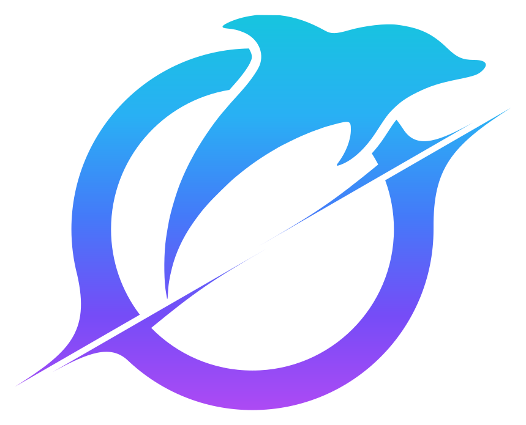
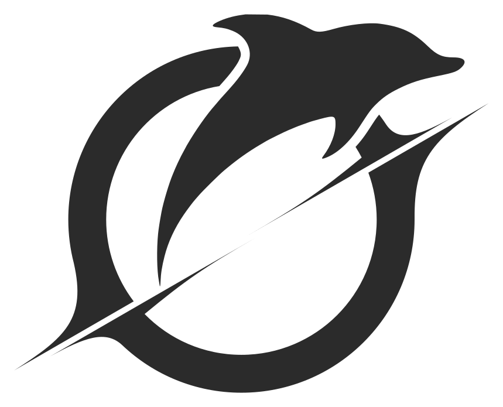

Identity manual · November 2026Cosmic
Cosmic
Dolphin
The Gargantua mark

The Gargantua mark

The dolphin breaks the upper arc. Beneath its tail, the two halves of the ring taper along a common diagonal. The open centre makes that crossing visible in one colour.
Two concentric circles define the ring. Its outer radius is 295.7 units and its inner radius is 231.
A 10-unit split rises 30° from left to right. Each flare meets the circle tangentially and narrows to a point.
A 16-unit clearance separates the body from the surrounding ring. Keep the negative space under the beak and beside the fin open.
The disk extends well beyond the circular body. Set the boundary from the outermost visible tip on each side, then measure outward.
D is the outer ring diameter. At D = 80 px, leave at least 10 px above, below and on either side of the artwork. Built-in transparent padding counts toward x.

Cosmic DolphinUse Inter Semibold in title case. Centre the name vertically beside the symbol and leave at least x between the tip and the first letter.
Violet starts at the foot of the ring and rises to cyan at the head. Both paths share one gradient, so the colour runs continuously through the silhouette.
Gradient stops run bottom to top in sRGB. For photography, choose a quiet area that holds the entire silhouette or place the mark on a Plum panel.
Compare these copies at 100% in the HTML edition. The widths include the SVG’s transparent margin. Watch the diagonal split first, then the clearance beneath the beak.
Preferred starting width for the detailed mark. At 96 px the split is about 1.1 CSS pixels. Check it against the final ground.
Use a single colour when fine edges soften. Pair the mark with the name where space allows. At 32 px the split is about 0.37 CSS pixels.
Use the one-colour silhouette as a recognition cue alongside the page title. At 16 px the split is about 0.19 CSS pixels and can disappear.
These are placement recommendations. Check the intended browser, device and pixel density before release.
Use the same master in a wide editorial composition, beside a product name and inside a square or circular mask. Change the amount of surrounding space to suit the surface.
Give the mark its own column. Keep both tips inside the safe area when the artwork is cropped for another format.
The header pairs a 40 px symbol with a 15 px name. In the 72 px tiles, a 52 px frame leaves breathing room for both tips. Proof the final platform mask.
The circle, diagonal and negative space identify the mark. These three changes undermine it, even when the dolphin itself remains visible.
For foil, ink or embroidery, send the charcoal vector as the shape to reproduce. Ask for a finished-size proof on the actual material. If the split fills or the tips break, increase the size until both survive the process.
Gargantua v0 is the approved Cosmic Dolphin symbol. Select the file by its background and method of reproduction.
gargantua-colour.svgPrimary master for screens and approved dark backgrounds.
gargantua-colour-on-plum.svgIncludes a shaded Plum field. Keep the entire rectangular artboard.
gargantua-charcoal.svg · gargantua-white.svgFor light and dark grounds, print proofs and single-colour placements.
gargantua-mono.svgFor inline SVG in interfaces. Set the parent colour to the chosen foreground.
PNG / 1,024 px wideUse the supplied PNGs for slides, email or tools that require pixels. Export larger sizes from the SVG.